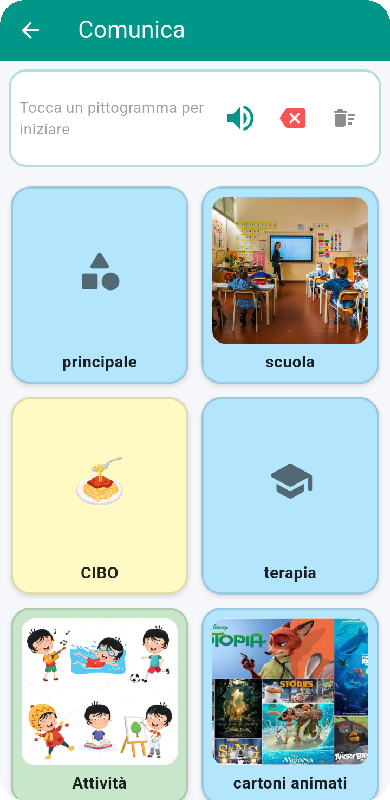
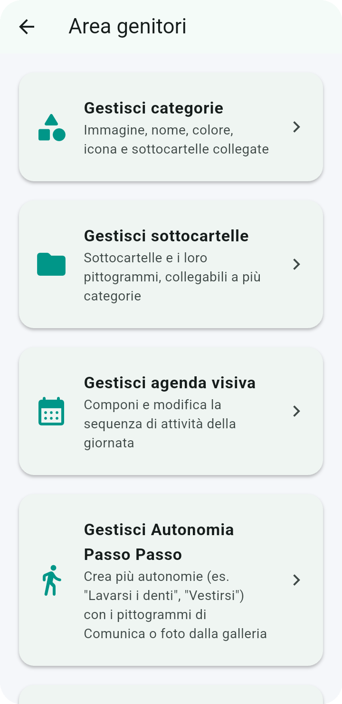
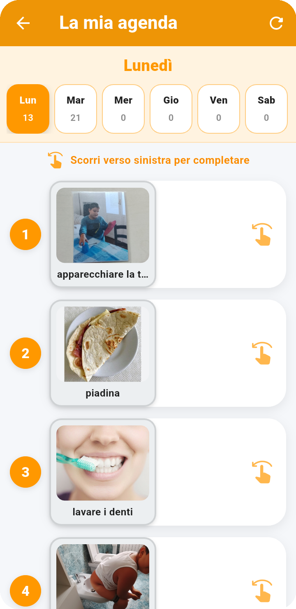
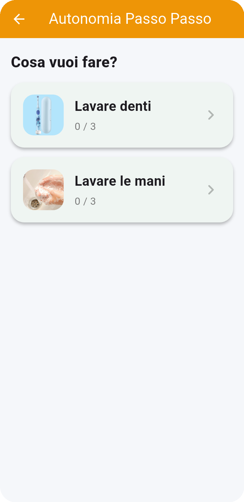
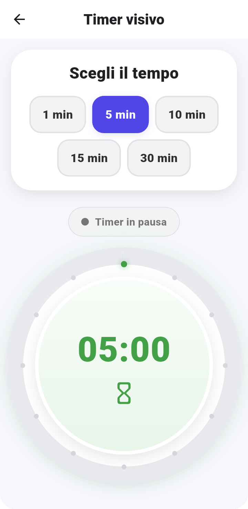
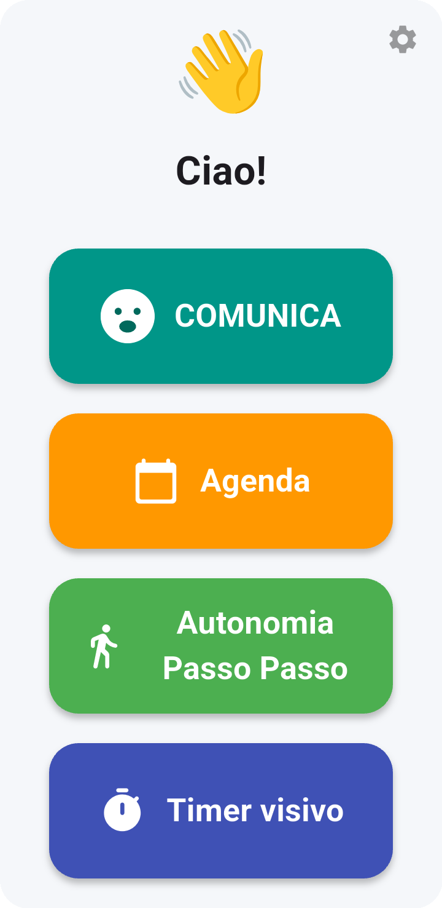

💬
Comunica
La persona tocca i pittogrammi per costruire frasi che l'app legge subito ad alta voce. Categorie e sottocartelle possono essere personalizzate e si possono aggiungere anche foto.
Parlo con Te – Comunico CAA è un'app pensata per rendere la comunicazione quotidiana più semplice, chiara e accessibile attraverso pittogrammi, immagini, voce e strumenti visivi.
Pittogrammi · Scrivi e comunica · Agenda visiva · Autonomia Passo Passo · Timer visivo · 7 lingue


Pensata per accompagnare bambini e ragazzi nella comunicazione quotidiana, nell'organizzazione della giornata e nello sviluppo dell'autonomia attraverso strumenti visivi semplici e intuitivi.
Un'interfaccia chiara, pulsanti grandi e strumenti pensati per rendere più semplice l'utilizzo quotidiano.
La persona tocca i pittogrammi per costruire frasi che l'app legge subito ad alta voce. Categorie e sottocartelle possono essere personalizzate e si possono aggiungere anche foto.
La persona scrive una parola con la tastiera e vede i pittogrammi corrispondenti. Toccando un pittogramma lo aggiunge alla frase e lo sente pronunciare.
Organizza i pittogrammi in categorie e sottocartelle personalizzabili, per trovare più facilmente parole e attività.
I pittogrammi e le frasi possono essere pronunciati attraverso la sintesi vocale del dispositivo, rendendo la comunicazione più immediata.
Organizza la giornata attraverso una sequenza visiva di attività, con possibilità di completare le attività e passare a quella successiva.
Suddividi le attività in semplici passaggi visivi e aiuta la persona a seguire una sequenza fino al completamento.
Un timer visivo aiuta a comprendere il trascorrere del tempo durante le attività quotidiane attraverso una rappresentazione immediata.
Interfaccia disponibile in italiano, inglese, spagnolo, francese, tedesco, portoghese e cinese semplificato.
Un'area protetta permette di gestire categorie, sottocartelle, agenda, voce, lingua, profilo, personalizzazioni e backup.

L'agenda visiva permette di rappresentare le attività della giornata in modo ordinato e immediatamente comprensibile.
La funzione Autonomia Passo Passo permette di costruire attività composte da più passaggi visivi.


Il timer visivo rappresenta il trascorrere del tempo in modo immediato, aiutando la persona a comprendere quanto manca alla fine di un'attività.
L'area dedicata ai genitori raccoglie gli strumenti necessari per configurare l'app e adattarla alle esigenze quotidiane.

L'app supporta sette lingue per rendere l'interfaccia accessibile a famiglie di paesi diversi.
5,99 € una tantum, senza abbonamento.
Pagamento sicuro tramite Stripe. Dopo la verifica del pagamento verrà fornito manualmente il codice Google Play.
💳 ACQUISTA – 5,99 €Apri direttamente la pagina ufficiale dell'app sul Google Play Store.
Parlo con Te è progettata per funzionare senza account e senza pubblicità. I dati dell'app vengono gestiti principalmente sul dispositivo secondo le funzionalità previste.
Leggi la Privacy Policy →